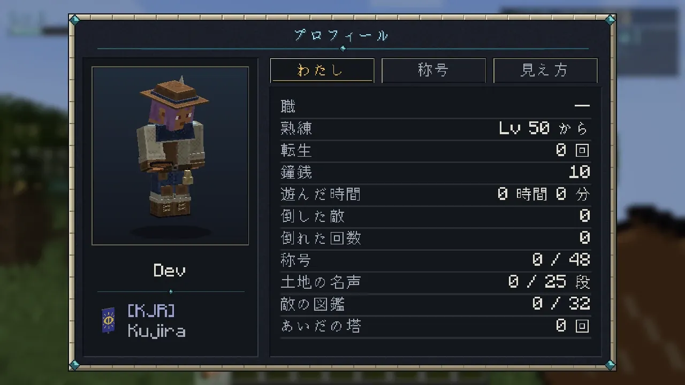
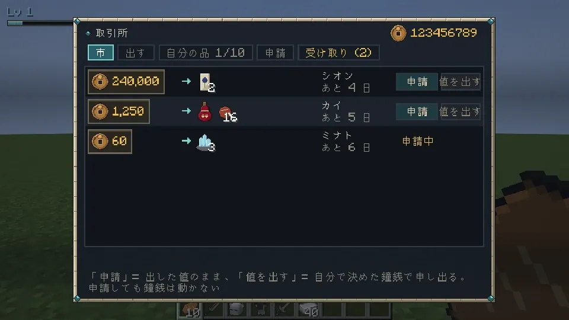
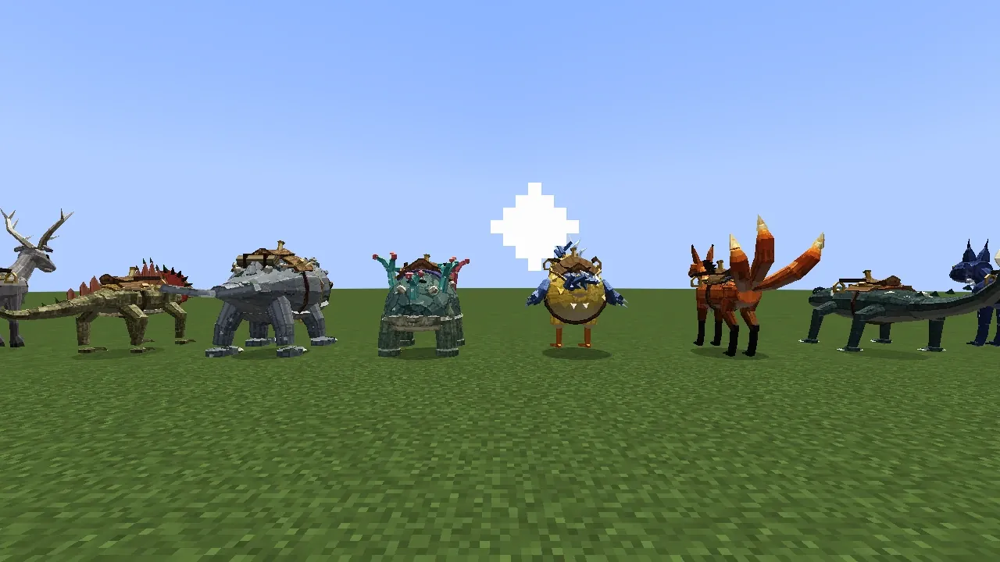
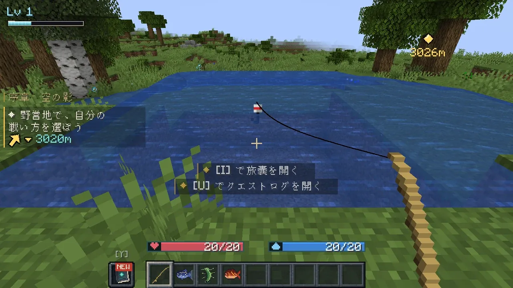
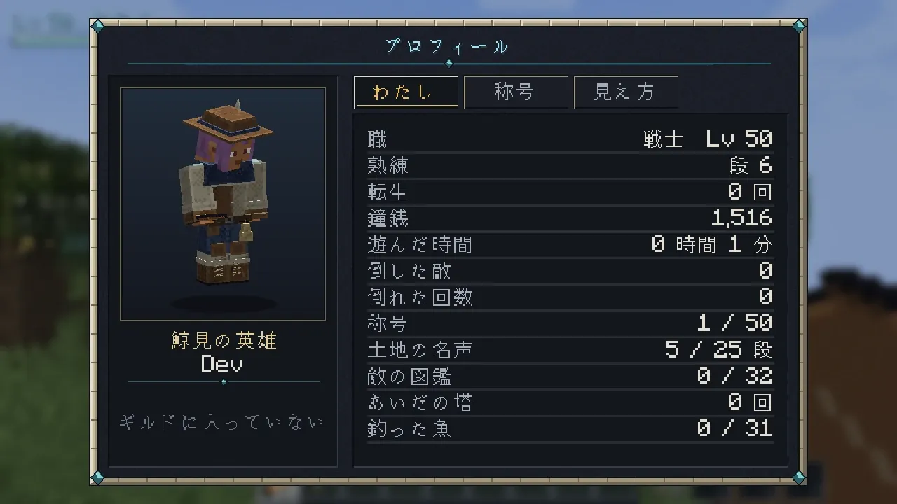

天と淵のあいだ
仲間と暮らし
一人でも遊べますが、6 人までのパーティで巨神の背に挑めます。都と町には、旅を支える人と場所があります。
PARTY
パーティとマルチ
一人用の世界でも、サーバーでも遊べます。

- パーティは 6 人まで。O か
/partyで招待します。 - 背中の試練は、人数に合わせて敵が強くなります。背の進みはパーティごとです。
- 章は、自分が止めた心臓の数で決まります。仲間より遅れていても、自分の章から進めます。
- 倒れた仲間は、そばでキーを長押しすると起こせます。
- ' で「ここ」を仲間に知らせます。
GUILD & TRADE
ギルドと取引所

- ギルド（
/guild）: 鯨追いの組合で登録します。踏破の記録、週の頼み、ギルドの紋。 - 取引所（
/trade）: ほかの人が出した品に申し出て、鐘銭で取り引きします。

MOUNTS
乗り物
乗り笛で呼ぶ、自分だけの乗り物です。

- 見た目は 10。章を進めると増え、終章のあとは空を飛ぶ空鱏に乗れます。
- 都の子の止まり木で、見た目と性能の段（速さは 8 段まで）を鐘銭で買います。
- 巨神の背・深淵・ボス部屋では呼べません。
- 巨神の子は呼び笛で現れ、パーティ全員を乗せて運んでくれます。

TOWN LIFE
都の暮らし
都の主な施設です（四つの土地の町にも、店・職の間・封切り師があります）。
| 場所 | できること |
|---|---|
| 大鐘楼 | 語り部と話す（メインの話・数え歌・伝承） |
| 宿「鐘の宿」 | 寝台を取る、噂を聞く |
| 道具屋・薬師の店 | 道具と薬を買う |
| 預かり所 | 品を預ける |
| 鍛冶場 | 共鳴の炉（強化・分解・再鍛造・交換） |
| 訓練場 | 職の間（職を替える）、木偶と的で試す |
| 鯨追いの組合 | ギルドの窓口・頼み |
| 取引所 | ほかの人と品を取り引きする |
| 子の止まり木 | 巨神の子を呼ぶ、乗り物を見る・買う |
| 四巨神の社 | 転生の台座、鍵の間（心臓を二つ止めると開く） |


RECORDS
記録と称号

- B の控え帳: 巨神の進みと、大事な品の在りか（呼び戻しもここ）。
- L の記し: この mod の進捗（旅・巨神・強敵・成長・町）。
/skyabyss_codexの図鑑: 出会った敵と、手に入れた装備。- 称号は名前の上か下に出せます。